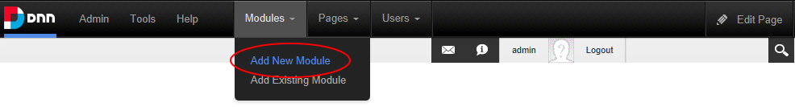
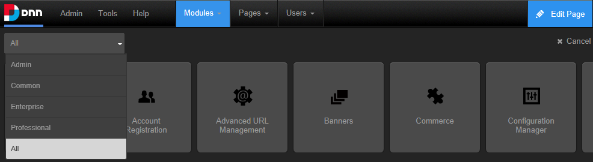
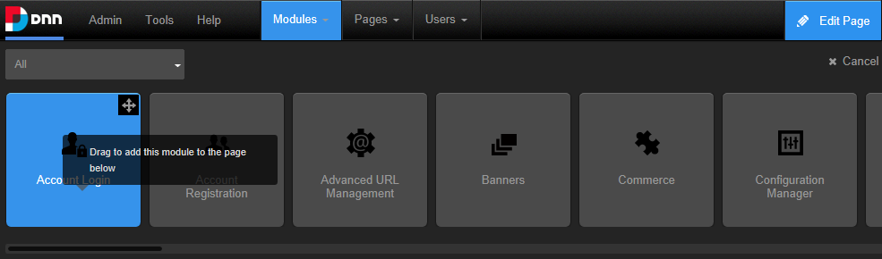
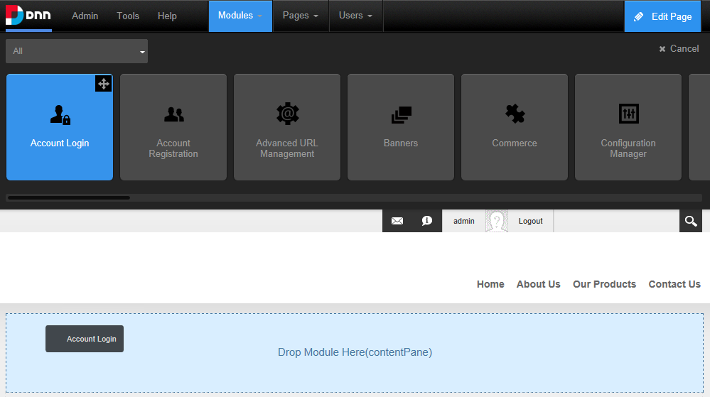
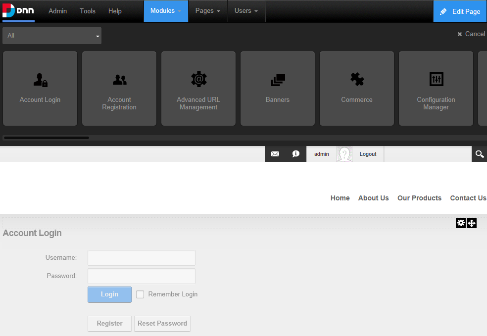
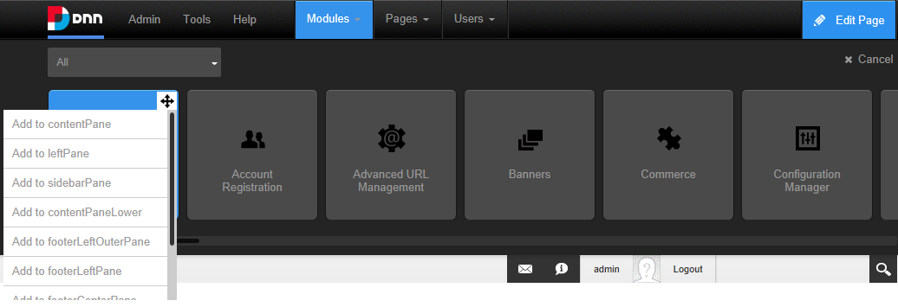

Adding a New Module (ControlBar)
How to add a new module without content into the current page using the ControlBar. Adding a new module inserts a module.
Users must be authorized to deploy a module and have the appropriate page editing permissions to add a module to a page.
Important. If content localization is enabled, See "Adding a Module to a Multi-Language Site"
Tip: For information on managing module categories, See "Editing Module Extension Settings"
Option One - Drag and Drop Module
- On the Control Bar, hover over the Modules drop down menu and then select Add New Module. This will load and display a list of all modules within All Categories, or the previously selected category.

- Optional. Filter the module list by selecting a module category from the drop down box that is displayed above the list of modules. The available categories are:
- All: Modules within all categories including those that haven't been associated with a category. This is the default option.
- Admin: Modules that are typically used for site administration rather than managing content such as the Extensions and Digital Asset Management modules.
- Common: Modules selected as frequently used.
- Developer: Provides access to the Module Creator module that enables developers to create new modules.
- Enterprise: Modules that are only included with Evoq Content Enterprise.
- Professional: Modules that are only included with Evoq Content.

- Locate the module to be added using the scroll bar located below the module list and then hover your mouse over the module to be added. This displays the message "Drag to add this module to the page below".

- Left click on the required module and then drag it down the page until the pane you want to add it to is highlighted with the message "Drop Module Here".

- Release your mouse button. The module is now added to the page.

Option Two - Insert Module
- On the Control Bar, hover over the Modules drop down menu and then select Add New Module. This will load and display a list of the modules within the Common category, or the previously selected category.
- Optional. If the required module isn't displayed, select the category that the module belongs to from the drop down box which is displayed above the list of modules. The available categories are:
- All: Modules within all categories including those that haven't been associated with a category. This is the default option.
- Admin: Modules that are typically used for site administration rather than managing content such as the Extensions and Digital Asset Management modules.
- Common: Modules selected as frequently used.
- Enterprise: Modules that are only included with Evoq Content Enterprise.
- Professional: Modules that are only included with Evoq Content.
- Locate the module to be added using the scroll bar located below the module list and then hover your mouse over the module to be added. This displays the Move icon in the top right corner of the module.
- Mouse over the Move icon to open the drop down menu and then select the pane that you want to add the module.

- The module is now added to the page.
Related Topics:
- For modules that you can now add content, See "Adding Module Content"
- To change the module title, See "Configuring Basic Module Settings"
- To change the module design, add the module to additional pages and add a module header or footer, See "Configuring Advanced Module Settings"
-
See "Installing Available Extensions"
-
See "Deploying and Installing More Extensions"
Tip: When you add the module listed as Users & Roles, three separate modules (Security Roles, My Profile and User Accounts) are added to the page. These modules do not need to be used on the same page. You can delete one or all of them, or move them to different pages as you like.